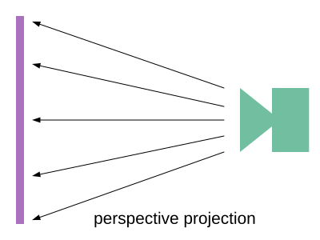
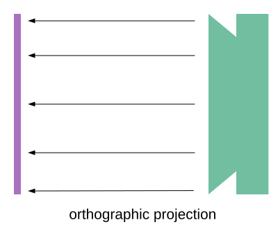

Cet article suppose que vous avez lu l’article sur
moins de code, plus de fun
car il utilise la bibliothèque mentionnée là-bas pour alléger les exemples.
Si vous ne comprenez pas ce que sont les tampons, les vertex arrays et les attributs,
ou ce que fait une fonction nommée twgl.setUniforms, etc., vous devriez
probablement revenir en arrière et lire les fondamentaux.
Il suppose également que vous avez lu les articles sur la perspective, l’article sur les caméras, l’article sur les textures, et l’article sur la visualisation de la caméra. Si vous ne les avez pas lus, commencez probablement par là.
La projection mapping est le processus de “projection” d’une image au sens d’un projecteur de cinéma pointé sur un écran et projetant un film dessus. Un projecteur de cinéma projette un plan en perspective. Plus l’écran est éloigné du projecteur, plus l’image est grande. Si vous inclinez l’écran de façon à ce qu’il ne soit pas perpendiculaire au projecteur, le résultat est un trapèze ou un quadrilatère quelconque.

Bien sûr, la projection mapping n’a pas à être plane. Il existe par exemple la projection cylindrique, la projection sphérique, etc.
Commençons par la projection planaire. Dans ce cas, imaginez que le projecteur a la même taille que l’écran, de sorte qu’au lieu que l’image grandisse à mesure que l’écran s’éloigne du projecteur, elle reste de la même taille.

Créons d’abord une scène simple qui dessine un plan et une sphère. Nous les texturerons tous les deux avec une simple texture de damier 8x8.
Les shaders sont similaires à ceux de l’article sur les textures, sauf que les différentes matrices sont séparées pour ne pas avoir à les multiplier en JavaScript.
const vs = `#version 300 es
in vec4 a_position;
in vec2 a_texcoord;
uniform mat4 u_projection;
uniform mat4 u_view;
uniform mat4 u_world;
out vec2 v_texcoord;
void main() {
gl_Position = u_projection * u_view * u_world * a_position;
// Passe la coordonnée de texture au fragment shader.
v_texcoord = a_texcoord;
}
`;
J’ai aussi ajouté un uniform u_colorMult pour multiplier la couleur de la texture.
En utilisant une texture monochrome, on peut changer sa couleur de cette façon.
const fs = `#version 300 es
precision highp float;
// Reçu du vertex shader.
in vec2 v_texcoord;
uniform vec4 u_colorMult;
uniform sampler2D u_texture;
out vec4 outColor;
void main() {
outColor = texture(u_texture, v_texcoord) * u_colorMult;
}
`;
Voici le code pour configurer le programme, les tampons de la sphère et du plan :
// configure le programme GLSL
// compile les shaders, lie le programme, récupère les emplacements
const textureProgramInfo = twgl.createProgramInfo(gl, [vs, fs]);
const sphereBufferInfo = primitives.createSphereBufferInfo(
gl,
1, // rayon
12, // subdivisions autour
6, // subdivisions en bas
);
const sphereVAO = twgl.createVAOFromBufferInfo(
gl, textureProgramInfo, sphereBufferInfo);
const planeBufferInfo = primitives.createPlaneBufferInfo(
gl,
20, // largeur
20, // hauteur
1, // subdivisions horizontales
1, // subdivisions verticales
);
const planeVAO = twgl.createVAOFromBufferInfo(
gl, textureProgramInfo, planeBufferInfo);
et le code pour créer une texture de damier 8x8 en utilisant les techniques couvertes dans l’article sur les textures de données.
// crée une texture de damier 8x8
const checkerboardTexture = gl.createTexture();
gl.bindTexture(gl.TEXTURE_2D, checkerboardTexture);
gl.texImage2D(
gl.TEXTURE_2D,
0, // niveau mip
gl.LUMINANCE, // format interne
8, // largeur
8, // hauteur
0, // bordure
gl.LUMINANCE, // format
gl.UNSIGNED_BYTE, // type
new Uint8Array([ // données
0xFF, 0xCC, 0xFF, 0xCC, 0xFF, 0xCC, 0xFF, 0xCC,
0xCC, 0xFF, 0xCC, 0xFF, 0xCC, 0xFF, 0xCC, 0xFF,
0xFF, 0xCC, 0xFF, 0xCC, 0xFF, 0xCC, 0xFF, 0xCC,
0xCC, 0xFF, 0xCC, 0xFF, 0xCC, 0xFF, 0xCC, 0xFF,
0xFF, 0xCC, 0xFF, 0xCC, 0xFF, 0xCC, 0xFF, 0xCC,
0xCC, 0xFF, 0xCC, 0xFF, 0xCC, 0xFF, 0xCC, 0xFF,
0xFF, 0xCC, 0xFF, 0xCC, 0xFF, 0xCC, 0xFF, 0xCC,
0xCC, 0xFF, 0xCC, 0xFF, 0xCC, 0xFF, 0xCC, 0xFF,
]));
gl.generateMipmap(gl.TEXTURE_2D);
gl.texParameteri(gl.TEXTURE_2D, gl.TEXTURE_MAG_FILTER, gl.NEAREST);
Pour dessiner, nous allons créer une fonction qui prend une matrice de projection et une matrice de caméra, calcule la matrice de vue à partir de la matrice de caméra puis dessine la sphère et le plan :
// Uniforms pour chaque objet.
const planeUniforms = {
u_colorMult: [0.5, 0.5, 1, 1], // bleu clair
u_texture: checkerboardTexture,
u_world: m4.translation(0, 0, 0),
};
const sphereUniforms = {
u_colorMult: [1, 0.5, 0.5, 1], // rose
u_texture: checkerboardTexture,
u_world: m4.translation(2, 3, 4),
};
function drawScene(projectionMatrix, cameraMatrix) {
// Crée une matrice de vue à partir de la matrice de caméra.
const viewMatrix = m4.inverse(cameraMatrix);
gl.useProgram(textureProgramInfo.program);
// Définit l'uniform partagé par la sphère et le plan
twgl.setUniforms(textureProgramInfo, {
u_view: viewMatrix,
u_projection: projectionMatrix,
});
// ------ Dessine la sphère --------
// Configure tous les attributs nécessaires.
gl.bindVertexArray(sphereVAO);
// Définit les uniforms propres à la sphère
twgl.setUniforms(textureProgramInfo, sphereUniforms);
// appelle gl.drawArrays ou gl.drawElements
twgl.drawBufferInfo(gl, sphereBufferInfo);
// ------ Dessine le plan --------
// Configure tous les attributs nécessaires.
gl.bindVertexArray(planeVAO);
// Définit les uniforms propres au plan
twgl.setUniforms(textureProgramInfo, planeUniforms);
// appelle gl.drawArrays ou gl.drawElements
twgl.drawBufferInfo(gl, planeBufferInfo);
}
Nous pouvons utiliser ce code depuis une fonction render comme ceci :
const settings = {
cameraX: 2.75,
cameraY: 5,
};
const fieldOfViewRadians = degToRad(60);
function render() {
twgl.resizeCanvasToDisplaySize(gl.canvas);
// Indique à WebGL comment convertir du clip space en pixels
gl.viewport(0, 0, gl.canvas.width, gl.canvas.height);
gl.enable(gl.CULL_FACE);
gl.enable(gl.DEPTH_TEST);
// Efface le canvas ET le tampon de profondeur.
gl.clear(gl.COLOR_BUFFER_BIT | gl.DEPTH_BUFFER_BIT);
// Calcule la matrice de projection
const aspect = gl.canvas.clientWidth / gl.canvas.clientHeight;
const projectionMatrix =
m4.perspective(fieldOfViewRadians, aspect, 1, 2000);
// Calcule la matrice de la caméra avec lookAt.
const cameraPosition = [settings.cameraX, settings.cameraY, 7];
const target = [0, 0, 0];
const up = [0, 1, 0];
const cameraMatrix = m4.lookAt(cameraPosition, target, up);
drawScene(projectionMatrix, cameraMatrix);
}
render();
Nous avons donc une scène simple avec un plan et une sphère. J’ai ajouté quelques curseurs pour permettre de changer la position de la caméra afin de mieux comprendre la scène.
Maintenant, projetons une texture sur la sphère et le plan.
La première chose à faire est de charger une texture.
function loadImageTexture(url) {
// Crée une texture.
const texture = gl.createTexture();
gl.bindTexture(gl.TEXTURE_2D, texture);
// Remplit la texture avec un pixel bleu 1x1.
gl.texImage2D(gl.TEXTURE_2D, 0, gl.RGBA, 1, 1, 0, gl.RGBA, gl.UNSIGNED_BYTE,
new Uint8Array([0, 0, 255, 255]));
// Charge une image de façon asynchrone
const image = new Image();
image.src = url;
image.addEventListener('load', function() {
// Maintenant que l'image est chargée, on la copie dans la texture.
gl.bindTexture(gl.TEXTURE_2D, texture);
gl.texImage2D(gl.TEXTURE_2D, 0, gl.RGBA, gl.RGBA, gl.UNSIGNED_BYTE, image);
// suppose que cette texture est une puissance de 2
gl.generateMipmap(gl.TEXTURE_2D);
render();
});
return texture;
}
const imageTexture = loadImageTexture('resources/f-texture.png');
Rappelons-nous de l’article sur la visualisation de la caméra : nous avons créé un cube allant de -1 à +1 et l’avons dessiné pour représenter le frustum de la caméra. Nos matrices faisaient en sorte que l’espace à l’intérieur de ce frustum représente une zone en forme de frustum dans l’espace monde, convertie vers le clip space -1 à +1. Nous pouvons faire quelque chose de similaire ici.
Essayons. D’abord, dans notre fragment shader, nous allons dessiner la texture projetée partout où ses coordonnées de texture sont entre 0.0 et 1.0. En dehors de cette plage, nous utiliserons la texture de damier :
const fs = `#version 300 es
precision highp float;
// Reçu du vertex shader.
in vec2 v_texcoord;
+in vec4 v_projectedTexcoord;
uniform vec4 u_colorMult;
uniform sampler2D u_texture;
+uniform sampler2D u_projectedTexture;
out vec4 outColor;
void main() {
- outColor = texture(u_texture, v_texcoord) * u_colorMult;
+ // divise par w pour obtenir la valeur correcte. Voir l'article sur la perspective
+ vec3 projectedTexcoord = v_projectedTexcoord.xyz / v_projectedTexcoord.w;
+
+ bool inRange =
+ projectedTexcoord.x >= 0.0 &&
+ projectedTexcoord.x <= 1.0 &&
+ projectedTexcoord.y >= 0.0 &&
+ projectedTexcoord.y <= 1.0;
+
+ vec4 projectedTexColor = texture(u_projectedTexture, projectedTexcoord.xy);
+ vec4 texColor = texture(u_texture, v_texcoord) * u_colorMult;
+
+ float projectedAmount = inRange ? 1.0 : 0.0;
+ outColor = mix(texColor, projectedTexColor, projectedAmount);
}
`;
Pour calculer les coordonnées de texture projetées, nous allons créer une matrice qui représente un espace 3D orienté et positionné dans une certaine direction, tout comme la caméra dans l’article sur la visualisation de la caméra. Nous projetterons ensuite les positions mondiales des sommets de la sphère et du plan à travers cet espace. Là où ils se trouvent entre 0 et 1, le code que nous venons d’écrire affichera la texture.
Ajoutons du code au vertex shader pour projeter les positions mondiales de la sphère et du plan à travers cet espace :
const vs = `#version 300 es
in vec4 a_position;
in vec2 a_texcoord;
uniform mat4 u_projection;
uniform mat4 u_view;
uniform mat4 u_world;
+uniform mat4 u_textureMatrix;
out vec2 v_texcoord;
+out vec4 v_projectedTexcoord;
void main() {
+ vec4 worldPosition = u_world * a_position;
- gl_Position = u_projection * u_view * u_world * a_position;
+ gl_Position = u_projection * u_view * worldPosition;
// Passe la coordonnée de texture au fragment shader.
v_texcoord = a_texcoord;
+ v_projectedTexcoord = u_textureMatrix * worldPosition;
}
Il ne reste plus qu’à calculer la matrice qui définit cet espace orienté. Tout ce qu’on a à faire, c’est calculer une matrice monde comme pour n’importe quel autre objet, puis prendre son inverse. Cela nous donnera une matrice qui nous permet d’orienter les positions mondiales d’autres objets relativement à cet espace. C’est exactement ce que fait la matrice de vue dans l’article sur les caméras.
Nous utiliserons notre fonction lookAt créée dans ce même article :
const settings = {
cameraX: 2.75,
cameraY: 5,
+ posX: 3.5,
+ posY: 4.4,
+ posZ: 4.7,
+ targetX: 0.8,
+ targetY: 0,
+ targetZ: 4.7,
};
function drawScene(projectionMatrix, cameraMatrix) {
// Crée une matrice de vue à partir de la matrice de caméra.
const viewMatrix = m4.inverse(cameraMatrix);
let textureWorldMatrix = m4.lookAt(
[settings.posX, settings.posY, settings.posZ], // position
[settings.targetX, settings.targetY, settings.targetZ], // cible
[0, 1, 0], // haut
);
// utilise l'inverse de cette matrice monde pour obtenir
// une matrice qui transformera d'autres positions
// relativement à cet espace monde.
const textureMatrix = m4.inverse(textureWorldMatrix);
// définit les uniforms identiques pour la sphère et le plan
twgl.setUniforms(textureProgramInfo, {
u_view: viewMatrix,
u_projection: projectionMatrix,
+ u_textureMatrix: textureMatrix,
+ u_projectedTexture: imageTexture,
});
...
}
Bien sûr, vous n’êtes pas obligé d’utiliser lookAt. Vous pouvez créer une
matrice monde de n’importe quelle façon, par exemple en utilisant un
graphe de scène ou une pile de matrices.
Avant d’exécuter, ajoutons une échelle :
const settings = {
cameraX: 2.75,
cameraY: 5,
posX: 3.5,
posY: 4.4,
posZ: 4.7,
targetX: 0.8,
targetY: 0,
targetZ: 4.7,
+ projWidth: 2,
+ projHeight: 2,
};
function drawScene(projectionMatrix, cameraMatrix) {
// Crée une matrice de vue à partir de la matrice de caméra.
const viewMatrix = m4.inverse(cameraMatrix);
let textureWorldMatrix = m4.lookAt(
[settings.posX, settings.posY, settings.posZ], // position
[settings.targetX, settings.targetY, settings.targetZ], // cible
[0, 1, 0], // haut
);
+ textureWorldMatrix = m4.scale(
+ textureWorldMatrix,
+ settings.projWidth, settings.projHeight, 1,
+ );
// utilise l'inverse de cette matrice monde pour obtenir
// une matrice qui transformera d'autres positions
// relativement à cet espace monde.
const textureMatrix = m4.inverse(textureWorldMatrix);
...
}
et avec ça, nous obtenons une texture projetée.
Il est peut-être difficile de voir l’espace dans lequel se trouve la texture. Ajoutons un cube en fil de fer pour aider à visualiser.
Il nous faut d’abord un ensemble séparé de shaders. Ces shaders peuvent simplement dessiner une couleur unie, sans textures.
const colorVS = `#version 300 es
in vec4 a_position;
uniform mat4 u_projection;
uniform mat4 u_view;
uniform mat4 u_world;
void main() {
// Multiplie la position par les matrices.
gl_Position = u_projection * u_view * u_world * a_position;
}
`;
const colorFS = `#version 300 es
precision highp float;
uniform vec4 u_color;
out vec4 outColor;
void main() {
outColor = u_color;
}
`;
Ensuite, nous devons compiler et lier ces shaders :
// configure les programmes GLSL
const textureProgramInfo = twgl.createProgramInfo(gl, [vs, fs]);
+const colorProgramInfo = twgl.createProgramInfo(gl, [colorVS, colorFS]);
Et nous avons besoin de données pour dessiner un cube fait de lignes :
const sphereBufferInfo = primitives.createSphereBufferInfo(
gl,
1, // rayon
12, // subdivisions autour
6, // subdivisions en bas
);
const sphereVAO = twgl.createVAOFromBufferInfo(
gl, textureProgramInfo, sphereBufferInfo);
const planeBufferInfo = primitives.createPlaneBufferInfo(
gl,
20, // largeur
20, // hauteur
1, // subdivisions horizontales
1, // subdivisions verticales
);
const planeVAO = twgl.createVAOFromBufferInfo(
gl, textureProgramInfo, planeBufferInfo);
+const cubeLinesBufferInfo = twgl.createBufferInfoFromArrays(gl, {
+ position: [
+ 0, 0, -1,
+ 1, 0, -1,
+ 0, 1, -1,
+ 1, 1, -1,
+ 0, 0, 1,
+ 1, 0, 1,
+ 0, 1, 1,
+ 1, 1, 1,
+ ],
+ indices: [
+ 0, 1,
+ 1, 3,
+ 3, 2,
+ 2, 0,
+
+ 4, 5,
+ 5, 7,
+ 7, 6,
+ 6, 4,
+
+ 0, 4,
+ 1, 5,
+ 3, 7,
+ 2, 6,
+ ],
+});
+const cubeLinesVAO = twgl.createVAOFromBufferInfo(
+ gl, colorProgramInfo, cubeLinesBufferInfo);
Remarquez que ce cube va de 0 à 1 en X et Y pour correspondre aux coordonnées de texture. En Z, il va de -1 à 1. Cela nous permettra de le mettre à l’échelle pour l’étirer dans les deux directions.
Pour l’utiliser, on peut simplement utiliser la textureWorldMatrix
d’avant puisque tout ce qu’on veut faire c’est dessiner le cube là où cet espace existe.
function drawScene(projectionMatrix, cameraMatrix) {
...
+ // ------ Dessine le cube ------
+
+ gl.useProgram(colorProgramInfo.program);
+
+ // Configure tous les attributs nécessaires.
+ gl.bindVertexArray(cubeLinesVAO);
+
+ // met le cube à l'échelle en Z pour qu'il soit très long
+ // pour représenter que la texture est projetée à l'infini
+ const mat = m4.scale(textureWorldMatrix, 1, 1, 1000);
+
+ // Définit les uniforms qu'on vient de calculer
+ twgl.setUniforms(colorProgramInfo, {
+ u_color: [0, 0, 0, 1],
+ u_view: viewMatrix,
+ u_projection: projectionMatrix,
+ u_world: mat,
+ });
+
+ // appelle gl.drawArrays ou gl.drawElements
+ twgl.drawBufferInfo(gl, cubeLinesBufferInfo, gl.LINES);
}
Et maintenant on peut voir plus facilement où se fait la projection.
Il est important de noter que nous ne projetons pas vraiment la texture. Nous faisons plutôt le contraire. Pour chaque pixel d’un objet rendu, on cherche quelle partie de la texture y serait projetée, puis on lit la couleur à cette partie de la texture.
Puisque nous avons mentionné les projecteurs de cinéma, comment simulerions-nous un projecteur de cinéma ? Fondamentalement, on peut juste multiplier par une matrice de projection :
const settings = {
cameraX: 2.75,
cameraY: 5,
posX: 2.5,
posY: 4.8,
posZ: 4.3,
targetX: 2.5,
targetY: 0,
targetZ: 3.5,
projWidth: 1,
projHeight: 1,
+ perspective: true,
+ fieldOfView: 45,
};
...
function drawScene(projectionMatrix, cameraMatrix) {
// Crée une matrice de vue à partir de la matrice de caméra.
const viewMatrix = m4.inverse(cameraMatrix);
const textureWorldMatrix = m4.lookAt(
[settings.posX, settings.posY, settings.posZ], // position
[settings.targetX, settings.targetY, settings.targetZ], // cible
[0, 1, 0], // haut
);
- textureWorldMatrix = m4.scale(
- textureWorldMatrix,
- settings.projWidth, settings.projHeight, 1,
- );
+ const textureProjectionMatrix = settings.perspective
+ ? m4.perspective(
+ degToRad(settings.fieldOfView),
+ settings.projWidth / settings.projHeight,
+ 0.1, // near
+ 200) // far
+ : m4.orthographic(
+ -settings.projWidth / 2, // gauche
+ settings.projWidth / 2, // droite
+ -settings.projHeight / 2, // bas
+ settings.projHeight / 2, // haut
+ 0.1, // near
+ 200); // far
// utilise l'inverse de cette matrice monde pour obtenir
// une matrice qui transformera d'autres positions
// relativement à cet espace monde.
- const textureMatrix = m4.inverse(textureWorldMatrix);
+ const textureMatrix = m4.multiply(
+ textureProjectionMatrix,
+ m4.inverse(textureWorldMatrix));
Notez qu’il y a une option pour utiliser une matrice de projection en perspective ou orthographique.
Nous devons aussi utiliser cette matrice de projection lors du dessin des lignes :
// ------ Dessine le cube ------
...
-// met le cube à l'échelle en Z pour qu'il soit très long
-// pour représenter que la texture est projetée à l'infini
-const mat = m4.scale(textureWorldMatrix, 1, 1, 1000);
+// oriente le cube pour correspondre à la projection.
+const mat = m4.multiply(
+ textureWorldMatrix, m4.inverse(textureProjectionMatrix));
et avec ça on obtient :
Ça fonctionne en partie, mais notre projection et les lignes du cube utilisent l’espace 0 à 1, donc ça n’utilise qu’un quart du frustum de projection.
Pour corriger ça, faisons d’abord en sorte que notre cube soit un cube -1 à +1 dans toutes les directions :
const cubeLinesBufferInfo = twgl.createBufferInfoFromArrays(gl, {
position: [
- 0, 0, -1,
- 1, 0, -1,
- 0, 1, -1,
- 1, 1, -1,
- 0, 0, 1,
- 1, 0, 1,
- 0, 1, 1,
- 1, 1, 1,
+ -1, -1, -1,
+ 1, -1, -1,
+ -1, 1, -1,
+ 1, 1, -1,
+ -1, -1, 1,
+ 1, -1, 1,
+ -1, 1, 1,
+ 1, 1, 1,
],
indices: [
0, 1,
1, 3,
3, 2,
2, 0,
4, 5,
5, 7,
7, 6,
6, 4,
0, 4,
1, 5,
3, 7,
2, 6,
],
});
Ensuite, nous devons faire en sorte que l’espace à l’intérieur du frustum aille de 0 à 1 pour notre matrice de texture, ce qu’on peut faire en décalant l’espace de 0.5 et en le mettant à l’échelle de 0.5 :
const textureWorldMatrix = m4.lookAt(
[settings.posX, settings.posY, settings.posZ], // position
[settings.targetX, settings.targetY, settings.targetZ], // cible
[0, 1, 0], // haut
);
const textureProjectionMatrix = settings.perspective
? m4.perspective(
degToRad(settings.fieldOfView),
settings.projWidth / settings.projHeight,
0.1, // near
200) // far
: m4.orthographic(
-settings.projWidth / 2, // gauche
settings.projWidth / 2, // droite
-settings.projHeight / 2, // bas
settings.projHeight / 2, // haut
0.1, // near
200); // far
-// utilise l'inverse de cette matrice monde pour obtenir
-// une matrice qui transformera d'autres positions
-// relativement à cet espace monde.
-const textureMatrix = m4.multiply(
- textureProjectionMatrix,
- m4.inverse(textureWorldMatrix));
+let textureMatrix = m4.identity();
+textureMatrix = m4.translate(textureMatrix, 0.5, 0.5, 0.5);
+textureMatrix = m4.scale(textureMatrix, 0.5, 0.5, 0.5);
+textureMatrix = m4.multiply(textureMatrix, textureProjectionMatrix);
+// utilise l'inverse de cette matrice monde pour obtenir
+// une matrice qui transformera d'autres positions
+// relativement à cet espace monde.
+textureMatrix = m4.multiply(
+ textureMatrix,
+ m4.inverse(textureWorldMatrix));
Et maintenant ça fonctionne :
À quoi sert la projection planaire d’une texture ?
L’une des raisons est simplement parce qu’on le veut. La plupart des logiciels de modélisation 3D offrent un moyen de faire de la projection planaire avec une texture.
Une autre est les décalcomanies (decals). Les décalcomanies permettent de mettre
des éclaboussures de peinture ou des marques d’explosion sur une surface. Elles ne
fonctionnent généralement pas via des shaders comme ci-dessus. Au lieu de ça, on
écrit une fonction qui parcourt la géométrie des modèles sur lesquels on veut
appliquer la décalcomanie. Pour chaque triangle, on vérifie s’il est dans la zone où
la décalcomanie s’appliquerait, comme la vérification inRange dans le shader. Pour
chaque triangle qui est dans la plage, on l’ajoute à une nouvelle géométrie avec les
coordonnées de texture projetées. On ajoute ensuite cette décalcomanie à la liste des
choses à dessiner.
Générer de la géométrie est la bonne approche, sinon il faudrait des shaders différents pour 2 décalcomanies, 3 décalcomanies, 4 décalcomanies, etc., et les shaders deviendraient rapidement trop complexes et atteindraient la limite de textures du shader GPU.
Une autre utilisation est la simulation du vidéo mapping réel. On construit un modèle 3D de la chose sur laquelle on va projeter de la vidéo, puis on fait la projection avec le code ci-dessus mais avec de la vidéo comme texture. On peut ensuite perfectionner et éditer la vidéo pour correspondre au modèle sans avoir à être sur place avec un vrai projecteur.
Ce type de projection est aussi utile pour calculer les ombres avec les shadow maps.